01
Dynamic mechanisms
Morphology and passive dynamics doing work that sensing and control would otherwise do.
Ph.D. Candidate · University of Washington
I design microrobots that roll, jump, glide, and fly on harvested energy — and a framework, Cyber-Mechanical Intelligence, for deciding where intelligence should live inside a robot that has almost no room for it.
Paul G. Allen School of CSE Iyer Lab & Autonomous Insect Robotics Lab Co-Founder, AVELA
The problem
Near-gram robots reach places larger machines cannot. But every milligram of sensor and battery competes with the power to move. So the real question is not how to shrink a robot — it is where its intelligence should live.
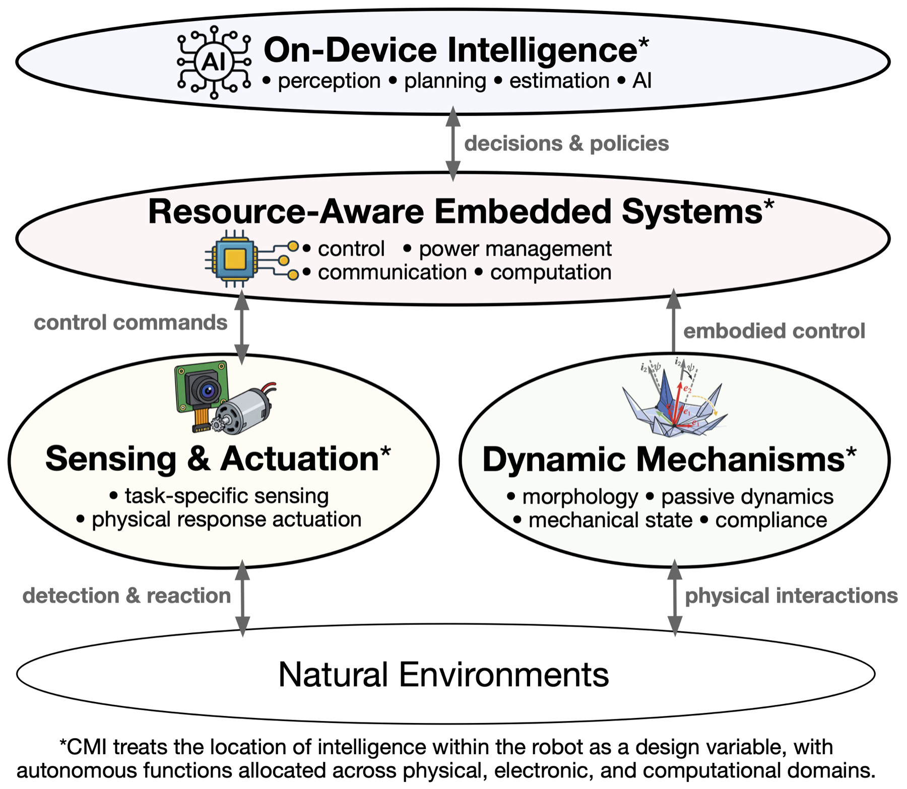
The framework
Intelligence here is not a synonym for computation. It is a system’s capacity to produce the right behavior for its task — and that can come from morphology, passive dynamics, or stored mechanical state just as readily as from a processor.
CMI treats the location of intelligence as a design variable: put each function where it costs the least mass, power and computation.
01
Morphology and passive dynamics doing work that sensing and control would otherwise do.
02
The least sensing and actuator authority that still closes the loop reliably.
03
Harvesting, buffering and duty cycling, so energy availability shapes behavior.
04
Computation spent only where adaptability changes what the robot does.
The systems
Each one moves a different function out of software and into the machine.
A bistable origami body holds either of two aerodynamic states with no power at all. One solar-powered pulse flips it mid-air — after that the structure, not a controller, keeps the new descent behavior.
414 mg2 stable states98 m dispersal
Harvested light is far too weak to drive a motor continuously. So MilliMobile accumulates it and spends it in bursts: motion becomes intermittent, and the robot stays energetically self-sufficient.
50 µW5.5 mm/s, no battery200 m+ link
Cheap geometric localization steers the robot constantly. The expensive learned classifier runs only when knowing what the target is would actually change what the robot does.
Onboard cameraDiscovery + tracking modes
A microfabricated flybar-rotor damps roll and pitch mechanically, leaving active control for yaw alone. Without it the vehicle cannot hold upright flight at all.
1.0 g4.2× lift-to-weight±11° RMS yaw
Passive stabilization
In progress
One capacitor, two gaits. The robot reads its own charge curve to walk or jump, and a Kresling origami spring amplifies the hop.
Alsomitra seeds glide in five distinct modes. A battery-free glider steers by shifting its centre of mass instead of adding actuators.
A soft body that turns itself inside out to climb through confined spaces — aimed at controllable capsule endoscopy.
FLEABOT · walking regime
FLEABOT · jumping regime, 330 µF at 4 V
Lessons
Selected publications
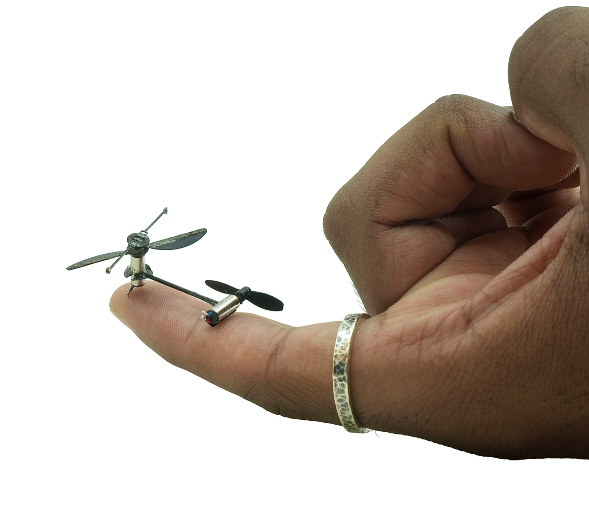
Science Advances
In revision Patent
2026
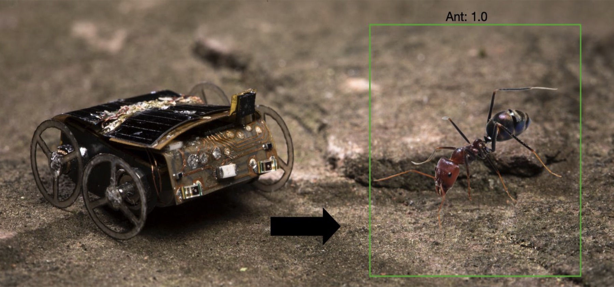
IEEE Robotics & Automation Letters (RA-L)
In preparation ICRA LB PDF
2026
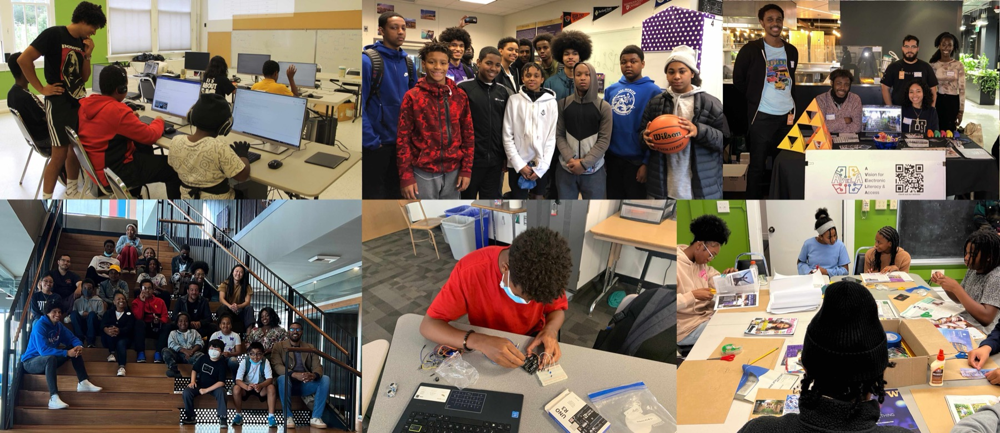
World Engineering Education Forum — Global Engineering Deans Council (WEEF-GEDC), Cartagena de Indias, Colombia
2026
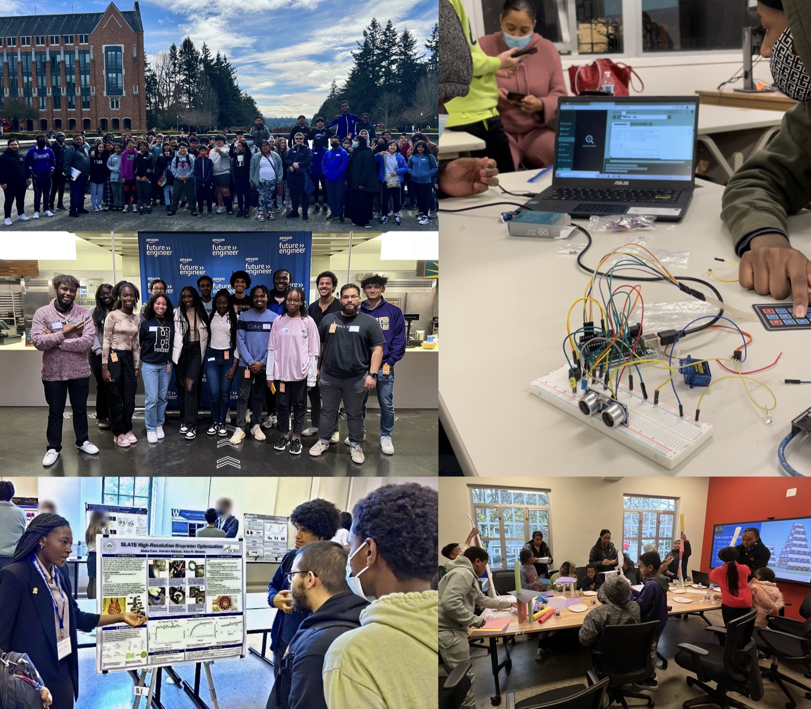
WEEF-GEDC, Daegu, Republic of Korea
2025
IEEE International Conference on Robotics and Automation (ICRA), Late Breaking — Atlanta, GA
2025
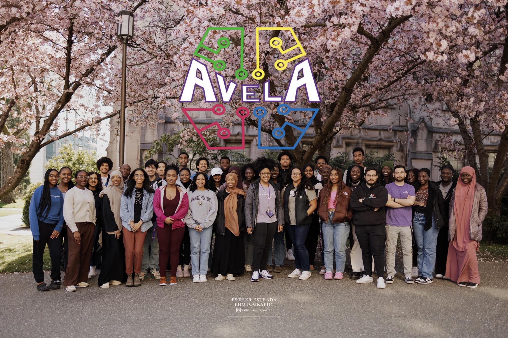
WEEF-GEDC, Sydney, Australia
2024
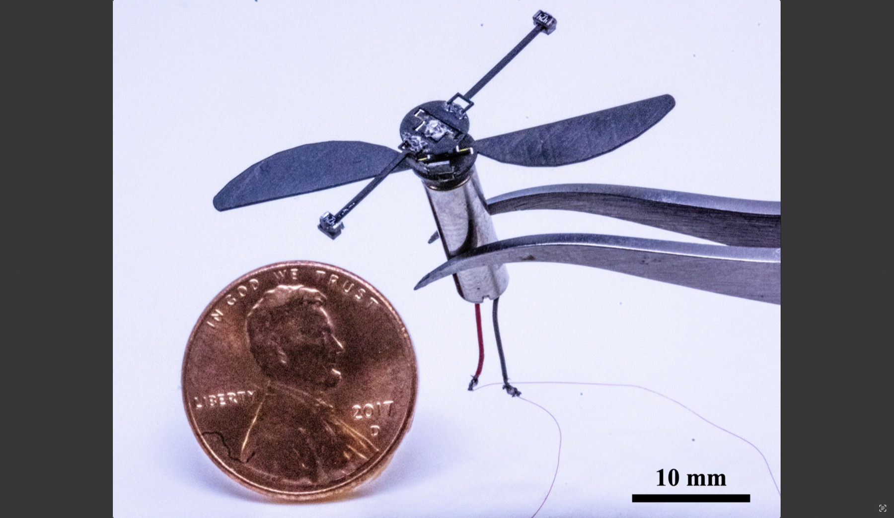
IEEE/RSJ International Conference on Intelligent Robots and Systems (IROS), Detroit, MI
2023
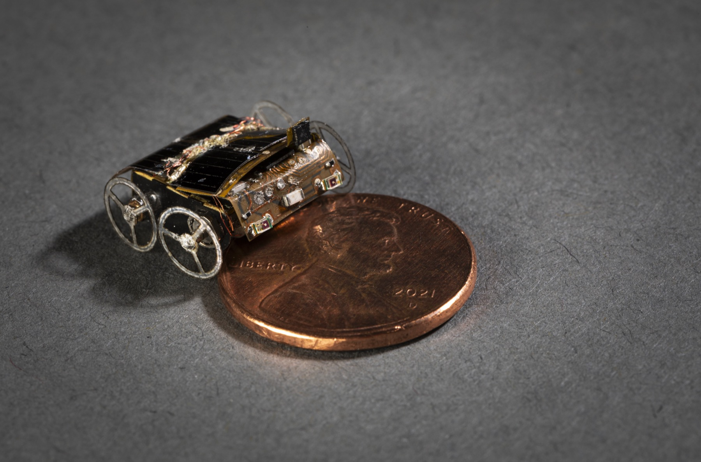
ACM International Conference on Mobile Computing and Networking (MobiCom)
2023
2023
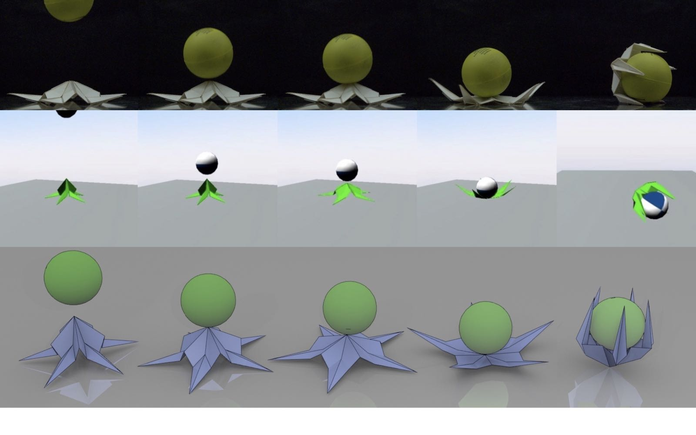
2022
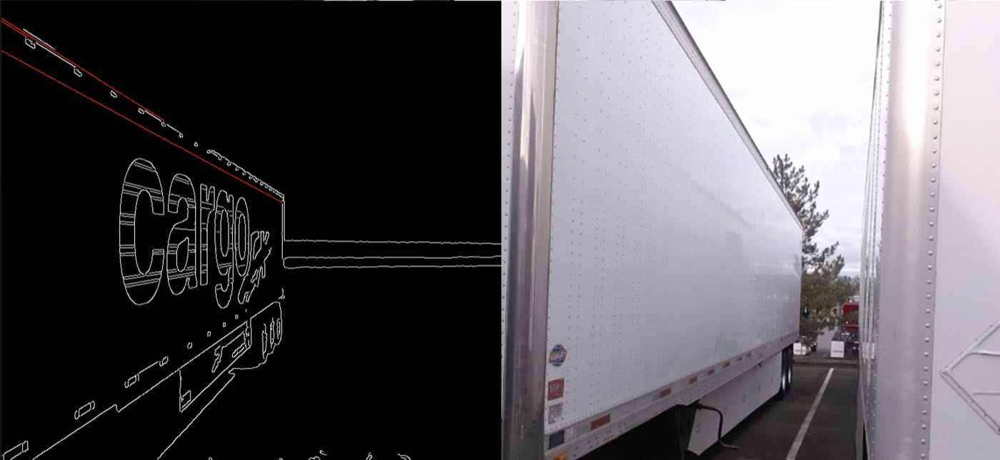
U.S. Patent 12,272,149 B2 — Assignee: PACCAR Inc.
2025
Invited talks
Apr 2026 · Johns Hopkins, Laboratory for Computational Sensing & Robotics
Battery-free Gram-scale Robots that Move Autonomously
Apr 2026 · Apple CEI Leadership & Learning Conference
Leveraging AI to Expand Access & Unlock Potential
Feb 2026 · UC Berkeley EECS Colloquium
Battery-free Gram-scale Robots that Move Autonomously
Jan 2026 · Black in Engineering Monthly Meeting
Autonomous Gram-Scale Microrobots Designed to Roll, Jump, Glide, and Fly
Jan 2026 · UC Berkeley Sensor & Actuator Center Technology Seminar
Battery-Free Gram-Scale Microrobots: Designing Autonomy for Rolling, Jumping, Gliding, and Flying
Jan 2026 · UW CSE Robotics Colloquium
Battery-free Gram-scale Robots that Move Autonomously
Sep 2025 · Seoul National University, STAR Lab
Battery-free Near-gram Microrobots: Designing Autonomy for Locomotion
May 2024 · Japan Aerospace Exploration Agency (JAXA)
Battery-free Autonomous Microrobots
Jan 2024 · NASA Goddard Space Flight Center Engineering Colloquium
Battery-free Autonomous Microrobotics
Nov 2023 · Cornell University Robotics Seminar
Battery-free Autonomous Microrobotics
Awards & fellowships
In the press
Currently
I hold a UW CoMotion Postdoctoral Entrepreneurship Award (2026–2027) and founded Nimbly, an autonomous robotics startup — developing a commercialization plan, licensing UW IP developed during my Ph.D., and advancing venture formation in partnership with the Allen School. Nimbly went through NSF I-Corps at the National and Northwest Region level in 2026.
Community-centered work
A federally recognized nonprofit expanding STEM opportunity for underrepresented youth through a multi-tier near-peer mentorship model — free, culturally responsive courses in AI literacy, data science, web development, robotics, and XR, pairing K–14 learners with representative college, graduate, and professional mentors.
college instructors mentored since 2019
secondary students taught
hours of hands-on STEM instruction
in grants and donations raised as PI / Co-PI
AVELA’s 500+ members have partnered with roughly 100 faculty, schools, and community partners across King County — Rainier Beach High School, Summit Atlas and Sierra, Boys & Girls Clubs, Africatown Community Land Trust’s William Grose Center, African Community Housing Development — and train educators through the Urban League, MESA, SPEEA ACE, and Washington NASA Space Grant.
Alumni have gone on to Microsoft, NASA, Amazon, Boeing, and NVIDIA, and to Ph.D. programs at Berkeley, UCLA, Maryland, Michigan, and Stanford. Beyond classes, AVELA hosts college and scholarship nights, organizes the Hip-Hop Climate Conference & Concert, supports technical internships, and publishes research on equitable education and AI at ACM CHI, RESPECT, EAAMO, and GEDC’s WEEF.
Instructors have co-designed classroom norms for responsible AI use and prototyped CourseSLM, a locally-run, user fine-tuned educational assistant, for learning in low-connectivity settings — because merely giving students access to a chatbot is not enough to bridge the digital divide.
I also co-founded UW’s Black Graduate Student Association in 2020 and grew it past 250 members. My community work is guided by Maya Angelou’s words: “When you learn, teach. When you get, give.”
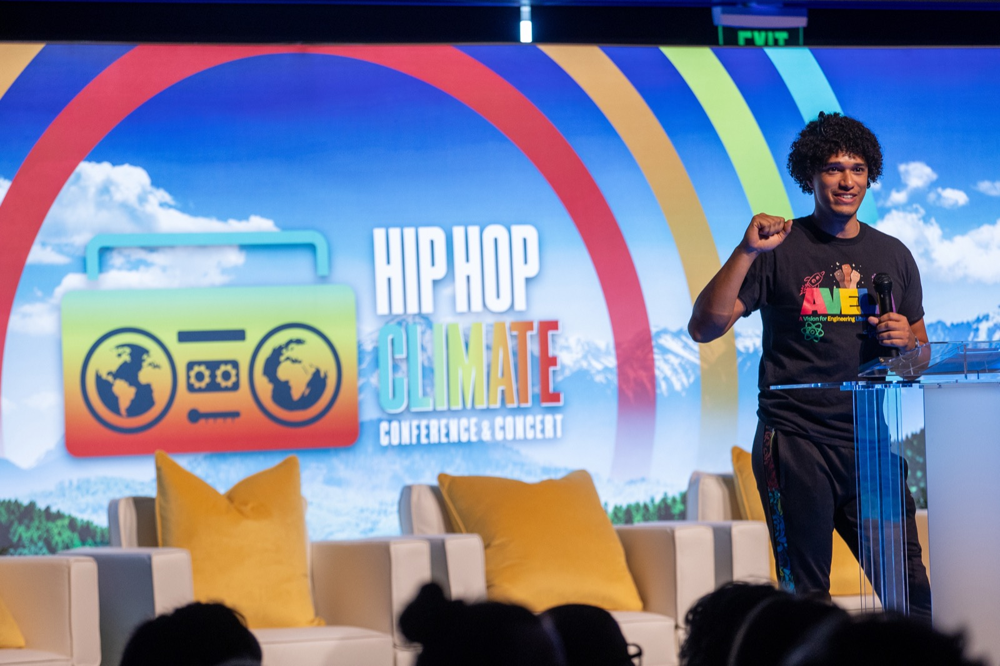
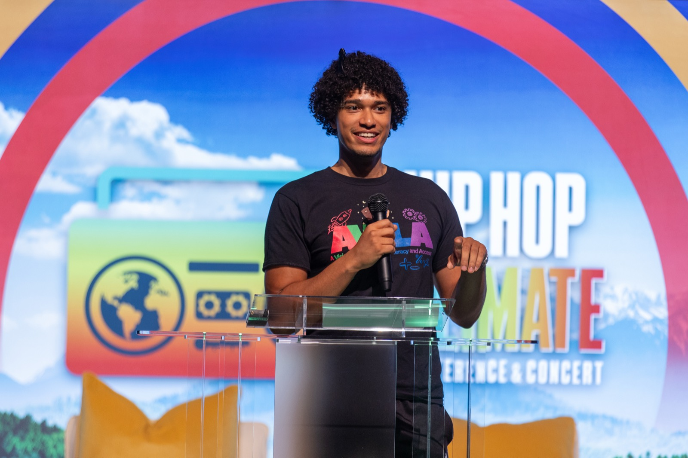
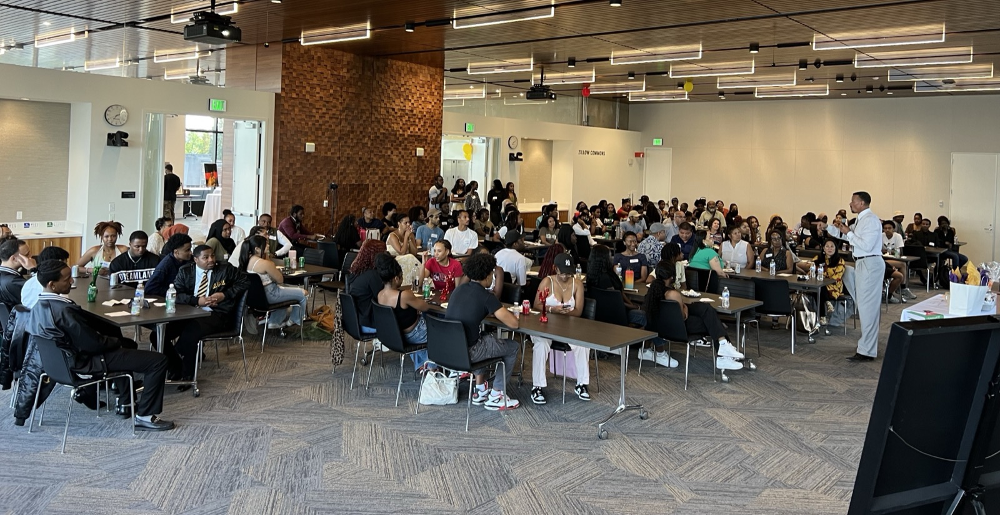
Selected coverage
About
I’m a Ph.D. candidate in Computer Science & Engineering at the University of Washington, advised by Vikram Iyer and Sawyer Fuller, and co-founder of the nonprofit AVELA.
My research explores how combinations of low-power actuation and control mechanisms can create autonomous microrobots optimized for resource-constrained applications. I envision these microrobots operating intelligently in large swarms, alongside larger systems, to transform disaster response, industrial inventory and inspection, wireless networking, precision agriculture, and environmental monitoring.
Before UW’s Iyer Lab I worked in Shyam Gollakota’s Networks & Mobile Systems Lab and Jinkyu Yang’s Laboratory for Engineered Materials & Structures, and spent time at NASA Goddard Space Flight Center and Whirlpool Corporation. I’ve mentored 24 Ph.D. students, 15 master’s students, and 20+ undergraduate researchers, and served as Lead TA for UW’s embedded systems and ubiquitous computing courses.